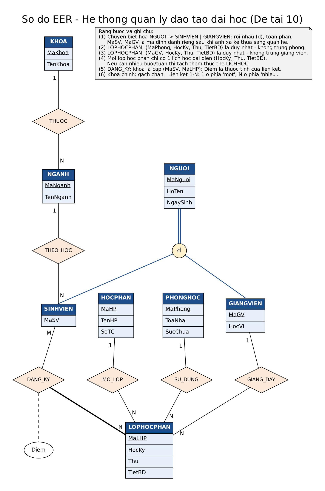

HIỂU DỮ LIỆU. THIẾT KẾ TỐT HƠN.
Phân tích lược đồ
Khám phá phụ thuộc hàm, từng bước một.
Lược đồ đầu vào
Phân tách bằng dấu phẩy. Tên thuộc tính phân biệt hoa thường.
Mỗi dòng một phụ thuộc: X -> Y. Hỗ trợ nhiều thuộc tính ở mỗi vế.
Chọn công cụ
Công cụ học tập
Mỗi kết quả đều có lời giải
Nhập lược đồ, chọn công cụ và bắt đầu phân tích.
Các bước suy luận sẽ xuất hiện tại đây.
Bao đóng X⁺
Lời giải chi tiết
Quá trình suy luận Nhấn để mở / thu gọn
DỮ LIỆU MẪU
Mô hình quản lý đào tạo
Khám phá phụ thuộc hàm qua bài toán quản lý đào tạo.
Các giả định của bộ dữ liệu
Mỗi lớp học phần có một lịch học đại diện, một phòng và một giảng viên. Mỗi sinh viên có một điểm cho mỗi lớp đã đăng ký. U là lược đồ tổng hợp dùng để phân tích, không phải một bảng vật lý duy nhất.
Phụ thuộc tùy chọn MaSV, MaHP, HocKy → MaLHP không nằm trong F chính.
Khóa ứng viên mong đợi
- MaSV, MaLHP
- MaSV, MaGV, HocKy, Thu, TietBD
- MaSV, MaPhong, HocKy, Thu, TietBD
Kết quả tham khảo cho bộ dữ liệu mẫu, không phải kết quả của lược đồ đang nhập.
Sơ đồ thực thể – liên kết mở rộng
Mở ảnh đầy đủ ↗
BẮT ĐẦU TẠI ĐÂY
Từ lược đồ đến lời giải
Ba bước để khám phá dữ liệu của bạn.
1. Chuẩn bị U và F
Nhập tên thuộc tính cách nhau bằng dấu phẩy. Mỗi phụ thuộc hàm nằm trên một dòng, ví dụ MaSV -> TenSV, MaNganh. Tên không dấu, không chứa khoảng trắng và có phân biệt hoa thường.
Bạn có thể nạp dữ liệu mẫu hoặc nhập file .txt có dòng U: và dòng F:. Dòng trống và dòng bắt đầu bằng # được bỏ qua.
2. Chọn phép phân tích
Bao đóng: nhập X để tìm X⁺ theo tập phụ thuộc F. Suy diễn: nhập X và Y để kiểm tra Y có nằm trong X⁺ hay không. Các công cụ khác tìm khóa, phủ tối thiểu, dạng chuẩn và phân rã 3NF. Mọi thuộc tính cần nằm trong U. Để biểu diễn tập rỗng, nhập ∅.
3. Theo dõi từng bước
Kết quả được tính bởi backend Java và các bước giải nhận từ API. Nếu backend không chạy hoặc dữ liệu không hợp lệ, giao diện báo lỗi và không thay bằng kết quả minh họa.
Lưu dữ liệu
Dữ liệu chỉ nằm trong phiên đang mở; hãy xuất file để lưu trước khi tải lại trang.